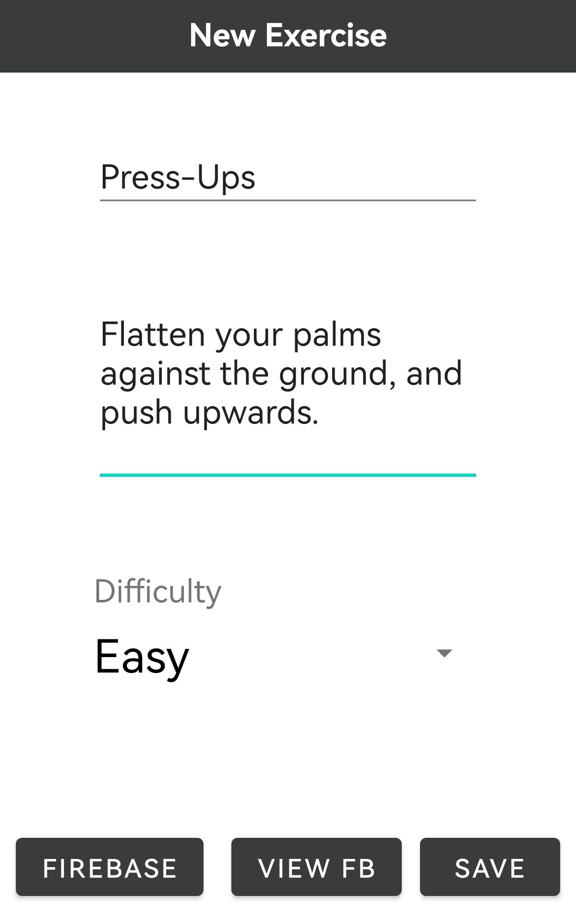
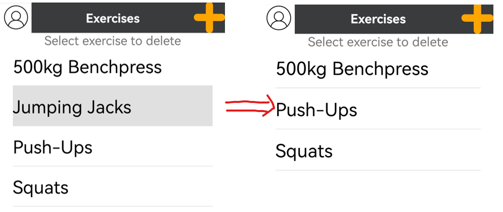
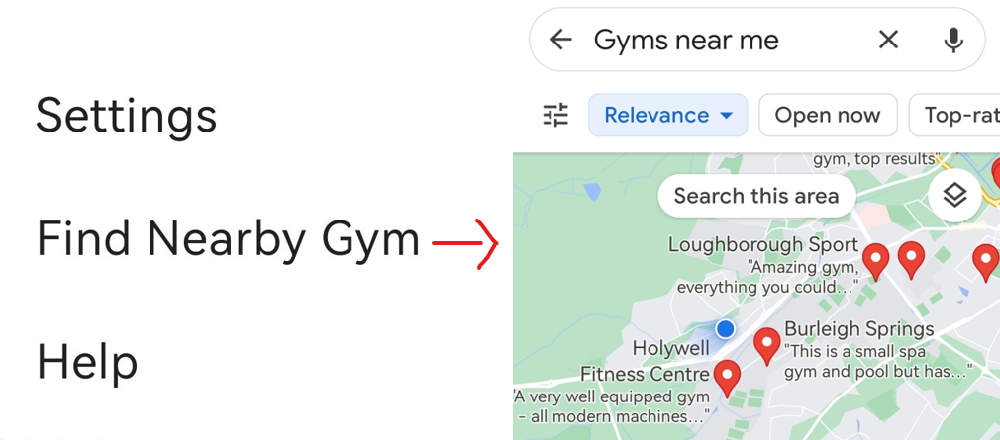

Lab 01: Responsive Design
Initial Boot
First we start on the Workout page, however, using the buttons on the navbar below OR by swiping gestures left and right, we can navigate through pages. Here we can add a temporary profile picture by clicking the profile icon on the top right, along with other features. A timer has started for 5 minutes, and will activate if the user does no meaningful actions. All it does is plays an audio file to get users motivated.
Adding an Exercise
Navigate to the exercise page (furthest to the right), and select the + button in the top right to access the create problems page. Once here, you can enter the details of an exercise, where you then get the option to save it in firebase (with the firebase button), view firebase exercises for inspiration or locally save your exercise, along with a description and difficulty.
Adding Routines
As you can see, the exercise should now be added after pressing save and it can be seen on the Exercise page. Now we have an exercise, we can start using routines. Every day is allocated a routine for that day, and you can allocate an exercise to a day once per exercise. This means you could have push-ups on monday and tuesday, but not twice on monday.
Navigate to the routine page, and press the edit button in the top right corner. Here in the routine page we select the Exercise we want to add, and the day we want to add it to. We can also set the Reps and Sets here, though the default value within is determined by the default values within the settings menu. After doing this, we can press save to save the exercise, and done when we want to leave the page.
Deleting Routines and Exercises
After adding routines and exercises, we should see ListViews on their respective pages. If you want to delete an Routine, this is done in the edit routine activity we used before, just tap the exercise you want to remove from your routine and it will disappear just like magic. Removing an exercise is very similar. Navigate to the exercise page and just tap the exercise you want to remove. Upon removing an exercise, the respective exercise will also be removed from any routines it exists in.
Beginning Workout:
If you navigate to the workout page, it will show the routine for today and today alone (as set in the routine page), upon pressing begin, you have the option to skip each workout, or do them and press done. A score is calculated based on the exercise difficulty, the amount of reps and the amount of sets. If you skip an exercise, you dont get any points. Upon finishing your workout, you will get to a page where you it will be stacked up against your highscore and tell you if you've beaten it or not. You also have the option to share your current score with another user (over text or whatever you want). If you have beaten your high score, it is overwritten and your new score becomes your highscore to beat.
Temporary Profile Picture:
Like many people, I've always dreamed of a tiny version of me watching me while I workout, and while that isnt possible until cloning becomes a thing, this is the closest we are going to get anytime soon. Tap the profile picture button in the top left of any of the main pages, grant permissions and set a temporary profile picture so it at least looks like someone cares.
Finding Nearby Gyms:
Now, while apps are great for keeping you fit, gyms are arguably even better. For that reason, I have added a convenient button in the top right menu, that will show you a list of gyms nearby